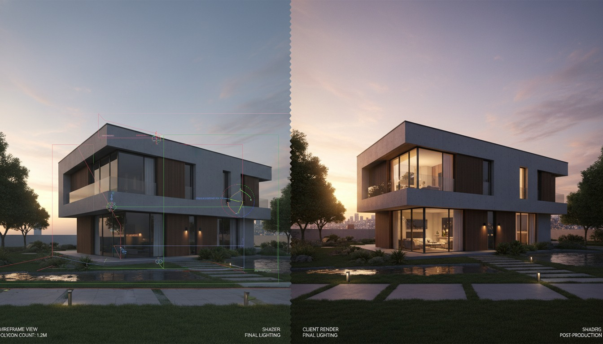

There is a workflow gap in almost every piece written about AI rendering, and it is the workflow most architects are actually in. You are not starting from a sketch. You are not starting from a prompt. You have a model, it is reasonably developed, and you need an image of it that does not look like a 3D viewport. The geometry is done. The problem is purely that the export looks like CAD, and CAD does not sell a design.
Tutorials are catching up to this. The crop of 3D-to-final-image walkthroughs and the Rhino-viewport-stylizing ComfyUI guides making the rounds are all describing the same job: take a render you already have and rescue it. It deserves to be treated as its own workflow, with its own tools and its own settings, because the failure modes are different from generation. We took three rough viewport captures, a Rhino courtyard, a SketchUp street elevation, and a Revit interior, and pushed each through three tools to see what render rescue looks like in 2026.
Why render rescue is its own workflow
It sits between two things people already write about. It is not sketch-to-photoreal, because you are not handing the AI a drawing to interpret, you are handing it a fully resolved geometry that it must respect completely. And it is not full path-traced rendering, because you are not setting up lights and materials and waiting on a render farm, you are styling an image you already have in seconds.
The defining constraint is fidelity. In render rescue, the AI is not allowed to invent anything. Every window, every floor line, every furniture block in your viewport is a decision you already made and documented. The tool's only job is to add the things the viewport lacks: believable light, real material depth, atmosphere, and the softness that makes an image read as a photograph instead of a model. The moment the tool changes geometry, it has failed, because you are now presenting a building you did not design.
Render rescue is the only AI rendering job where a beautiful result that changed your geometry is worse than an ugly one that did not.
The local path, ComfyUI stylizing a viewport
The ComfyUI route is the high-control option, and for render rescue it is the strongest. The graph is simpler than a sketch-to-photoreal setup because you are not building a complex conditioning stack, you are running a tuned img2img pass with control conditioning to lock the geometry you already have.
The graph that works
For our Rhino courtyard capture, the graph that produced the best rescue was an img2img pass on a Flux-class model with a depth ControlNet running off the viewport itself. The viewport already contains clean depth information, which is the advantage of rescuing a 3D export over interpreting a sketch. You feed the capture as the img2img latent, run depth conditioning at high strength to nail the geometry, and let the denoise add the light and material the viewport never had.
The setting that decides everything
Denoise strength is the entire game. Too low, around 0.3, and you get a slightly prettier viewport that still reads as CAD. Too high, above 0.65, and the model starts inventing, smoothing your mullions and guessing at materials you did not specify. The usable band for render rescue on a developed model is roughly 0.40 to 0.55, with depth ControlNet holding the line. On the Rhino courtyard, 0.48 with depth at 0.85 produced a frame that was unmistakably the model, lit like a photograph.
The cloud path, img2img on a viewport export
Not every studio is going to build a ComfyUI rig, and the cloud img2img tools have a render-rescue mode whether they call it that or not. The architecture-tuned cloud tools accept a viewport capture as an image input with an adjustable influence or strength control, which is the cloud equivalent of denoise.
On the SketchUp street elevation, an architecture-tuned cloud tool with influence held high produced a credible rescue in about a minute, with light and material added and the elevation geometry intact. The Revit interior was harder. Cloud tools have a residential-interior bias, and on the Revit interior capture the tool wanted to warm up the lighting and add furniture that was not in the model. Pulling the strength control down kept the geometry but flattened the rescue back toward the original problem. That tension, fidelity versus polish, is the cloud render-rescue experience in one sentence.
| Viewport capture | ComfyUI img2img + depth | Architecture-tuned cloud tool | General cloud img2img |
|---|---|---|---|
| Rhino courtyard (clean depth) | Held geometry, real light | Good, minor drift | Drifted on paving |
| SketchUp street elevation | Tightest control | Credible in a minute | Acceptable |
| Revit interior | Held, took tuning | Added furniture | Substituted the room |
| Setup cost | Hours, once | Minutes | Minutes |
| Control over fidelity | Precise | One slider | Coarse |
The settings that actually matter
Across every tool, render rescue comes down to three controls, and getting them right is most of the skill.
Denoise or influence strength is the master control. Find the band where the tool adds light and material without inventing geometry, and live in it. For a developed model that band is narrower than people expect, usually a window of about 0.15 wide.
Control conditioning is what makes the band exist at all. A depth or canny pass off the viewport capture is what lets you push denoise high enough to get real atmosphere without losing the building. Without it, every setting is a gamble. With it, you have a usable range.
The prompt is for material and light, never geometry. In render rescue the prompt should describe the time of day, the sky, the material qualities the viewport could not show. The moment you start describing the building in the prompt, you are inviting the tool to reinterpret geometry you already drew. Let the image carry the building. Let the prompt carry the photograph.
Our take, when to rescue and when to render properly
Render rescue is the right workflow for the situation it is named for: a developed model, a near-term deadline, and a need for an image that reads as a photograph rather than a viewport. For concept reviews, progress meetings, and the middle 80 percent of client conversations, a good rescue pass is faster than setting up a path-traced render and more honest than generating something from a prompt. If you build a ComfyUI rig for one AI rendering job this quarter, make it this one, because the control you get over fidelity is worth the setup hours.
It is the wrong workflow for two things. It is wrong for true hero frames, the cover image of the proposal, where a path-traced render still wins on the details that survive scrutiny. And it is wrong for early design, where the geometry is not settled enough to be worth locking, and you should be in a generation workflow instead. Render rescue assumes the design decisions are made. If they are not, you are rescuing a building that does not exist yet.
The honest summary is that render rescue is the most underrated AI rendering workflow of 2026 precisely because it is the least exciting. It does not generate a building. It does not turn a napkin into a tower. It just takes the model you already built and makes it look like the building you already designed. For a working studio, that is the job that comes up every single week.
Try it on the next viewport that disappoints you. Take one rough export from your current model, run it through an img2img pass with control conditioning, and find your denoise band by bracketing, one pass low, one pass high, one in the middle. Put the three next to the original. The one that looks like a photograph and is still unmistakably your building is your studio's render-rescue setting. Write it down and stop guessing.
Tested by Vista Studios on three viewport captures from live projects, Rhino, SketchUp, and Revit. No affiliate relationships. ComfyUI graph tuned per capture. Denoise and control settings reported as run.